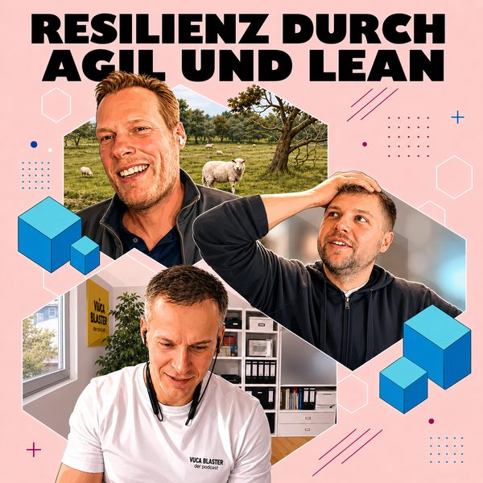

#54
Resilienz durch Agil & Lean
Wie Lean und Agilität Teams resilienter machen können, statt sie weiter zu überlasten.
· 50 Min.
mit Kristian Schweitzer
Lean- und Agile Coach
- verbindend · Hauptwert
Diese Folge hören
Dort hilft jedes Abo und jede Bewertung dem Podcast.
Worum es geht
Lean und agil – aber bitte ohne Dauerstress.
In dieser Folge sprechen wir mit Christian Schweizer, Lean- und Agile Coach, darüber, wie Lean und Agilität Teams und Organisationen resilienter machen können – statt sie weiter zu überlasten.
Wir schauen darauf,
warum Agilität oft falsch verstanden und „verbrannt“ ist
wie klare Priorisierung, Fokus und Struktur psychologische Sicherheit schaffen
weshalb Retrospektiven und Reflexion echte Resilienzfaktoren sind
und wie pragmatische Lean-Prinzipien helfen, mit Wandel und Unsicherheit umzugehen.
Eine Folge für alle, die Agilität wieder sinnvoll, menschlich und wirksam einsetzen wollen – jenseits von Methoden-Hypes.
Transkript lesen
Automatisch erstellt. Fremdwörter, Fachbegriffe und Namen können falsch erkannt sein.
0:04 Ja hallo und herzlich willkommen zu einer neuen Folge des VUCA Blasters. Heute haben wir wieder einen sehr spannenden Gast und zwar Kristian Schweitzer. Er ist Wirtschaftsingenieur, Lean und Agile Coach mit rund 15 Jahren Erfahrung in Lean Management, Operational Excellence und agilen Transformation in verschiedenen Unternehmen und Branchen. Er verbindet klassische Lean Prinzipien mit agilen Arbeitsweisen wie Scrum, Kanban und legt dabei großen Wert auf pragmatische, im Alltag tatsächlich umsetzbare Lösungen. Zumindest hat das so Perplexity rausgegeben. Stimmt das jetzt noch oder fehlt dir da noch was Wichtiges? Klar sind es sehr sehr kurz nur gehalten, aber ist dir irgendwas wichtig, was die Zuhörerinnen noch über dich wissen sollten? Ich glaube, ich finde das ganz wichtig, dass du das Pragmatische mit drin hast. Ich war schon sehr gespannt auf dieses Kondensat, was du da erzeugst. Ein paar von euren Teilnehmern kenne ich ja schon und da kann man sich ein gutes Bild bilden, aber ich finde das passt gut. Super. Dann kommen die, wie wahrscheinlich dann auch von den anderen Folgen kennst, schon die berüchtigten Fragen. In welchem Moment hast du dich gewertschätzt gefühlt in letzter Zeit? Boah, das ist gar nicht mal so leicht. Die Fragen sind schon tricky. Gewertschätzt gefühlt, das ist eigentlich immer, wenn ich merke, dass Leute auf eine Aktion, auf etwas, was ich gemacht habe, reagieren. Also das muss jetzt nicht zwingend super positiv sein, aber so dieses, ja, ich habe verstanden, du hast mir zugehört. Wir hatten gerade in der Firma schwierige Situationen und da habe ich das auf jeden Fall, ich glaube, das wäre das konkrete Beispiel, ja. So, danke, dass du uns zugehört hast und auch wenn du nichts machen kannst, danke fürs Zuhören, ja.
1:53 Vielen Dank. Dann eine gute Frage, die du in letzter Zeit gehört hast. Ich hoffe mal nicht die erste Frage, die ich gerade bestellt habe. Boah, das wäre jetzt ein bisschen gemein, ne? Ja, eine gute Frage ist immer, wofür machen wir das? Und die habe ich in letzter Zeit öfters gehört und ich stelle die auch sehr gerne, weil manchmal läuft man so in blindem Aktionismus los, weil ja irgendwas irgendwie ist, aber so diesen kurzen Stopp, einmal kurz innehalten, ne? Was ist, was ist der Hintergrund? Was ist der Schmerz dahinter? Warum machen wir das? Was soll rauskommen? Und ich finde, das ist immer eine gute Frage. Das müsste ich mir vielleicht manchmal auch ein bisschen öfters stellen, als du gerade gesagt hast, so blind vielleicht nicht, aber ich habe Pfeil auch schnell in so Aktionismus. Aber ich glaube, das ist dann ganz gut, nochmal so ein bisschen einen Schritt zurück, dann nochmal darüber nachzudenken, ja. Dann die letzte Frage, da hast du auch schon geschafft. Deine Definition von Glück ist? Die ist auf jeden Fall in der Gegenwart. Also ich sehe Glück nicht als etwas, einen Zustand, wo ich jetzt irgendwie 30 Jahre drauf zuarbeite oder so, sondern Glück ist für mich etwas, was in der Gegenwart ist und das können auch ganz kleine Sachen sein. Das kann im privaten Umfeld, hat das meistens was mit Kindern zu tun, wo irgendwas gelingt und man sich an anderen Leuten erfreuen kann. Und einfach so eine Zufriedenheit und auch so ein bisschen Freiraum, etwas machen zu können, ist auch schon ein kleines Glück.
3:23 Haben wir schon geschafft. Was mich mal interessieren würde, wie viele von den Fragen hast du? Das sind ja physische Zeppel, die du da hast, ne? Das sind, glaube ich, so um die 50. Tag. Die heute eine Frage hatten wir nämlich auch noch nicht. Manchmal denke ich auch so, ach so, die Frage interessant, manchmal automatisch vielleicht dann doch die gleichen. Ja, ungefähr so 50 Fragen sind das, ja. Wollen wir ins Thema, also wir wollen heute so ein bisschen über Agilität, Lean und wie das so mit Resilienz zusammenhängt starten. Jetzt von diesen drei Begriffen, Lean, Agilität und Resilienz, wie starten wir da am besten? Ist es, dass wir erstmal ein bisschen über Lean reden und macht das dann Sinn dann in diese Agilität? Oder was würdest du sagen, ist so der Startpunkt, um ein bisschen in dieses Gespräch, in dieses Thema reinzukommen? Ja, lass uns ruhig mit dem Thema Lean starten. Ich glaube, auf die Resilienz kommen wir automatisch. Und die Agilität ist jetzt auch ein Thema, was bei mir ohnehin später dazugekommen ist. Deswegen passt das von der Reihenfolge ganz gut. Vielleicht für die Leute, die noch lean, also ich habe auch noch nicht, muss ich sagen, vielleicht darf ich das gar nicht so laut sagen, aber lean auch noch nicht so viel gemacht. Man hört das immer und vielleicht kannst du erstmal so ein bisschen grob umreißen.
4:42 Worum geht es da? Was sind das, ja genau, worum geht es da vielleicht als Startfrage? Ja, am Ende ist das Thema entstanden. Man hat sich in den 80er Jahren gewundert, die japanischen Automobilfirmen werden immer besser. Und dann gab es zwei Amerikaner, die haben eine Studienreise gemacht, haben sich das angeschaut und das beobachtete mit nach USA und dann auch nach Europa mitgebracht. So der prominenteste Einsatz in Deutschland oder wo es angefangen hat, ist Porsche. Wiedeking hat das Thema sehr stark getrieben und diese ganze Lean-Bewegung hat auch eine Reise hinter sich. Also manchmal wird es missbraucht als Kosteneinsparungsreduktionsprogramm. Viele Firmen haben angefangen und das Beobachtbare, 5S ist so eine Ordnungssystematik, da siehst du, kommst du in wenigen Schritten recht schnell zum ordentlichen Arbeitsumfeld. Das siehst du natürlich sofort. Und man hat so angefangen mit diesen Sachen, die man sehen konnte. Und die versucht auch Gedeih- und Verderben zu übertragen. Und das muss ja nicht immer passen, aber das ist wirklich ein Methodenbaukasten, den man aufgebaut hat. Und dann hat man irgendwann erkannt, okay, der Methodenbaukasten ist zwar gut, irgendwie funktioniert er nicht, aber vielleicht steckt noch mehr dahinter. Und da steckt tatsächlich halt eine ganze Philosophie, eine Herangehensweise hinter. Und da geht es halt sehr viel um den Kunden.
6:07 Also was ist der Kundennutzen von meinen Produkten? Und ganz viel auch um den Flow. Also wie läuft das Produkt durch die Firma? Wie kann ich das besser machen, schneller machen? Und ja, mich kontinuierlich verbessern. Und das ist so ein großer Kern von Lean. Also auch dieser Wertstrom-Gedanke ist ein sehr starkes Ding, was ich auch immer wieder einsetze, auch in Nicht-Produktionssachen. Aber es kommt zumindest aufgrund der Beobachtung, die man zuerst gemacht hat, aus der Produktion. Die japanischen Unternehmen machen das aber als ganzheitlichen Ansatz. Und da gibt es irgendwie so verschiedene Prinzipien? Und da ist es noch nicht so ganz greifbar. Prinzipien und hinter diesen Prinzipien stecken verschiedene Methoden, die man dann anwendet? Genau. Es gibt Methoden, die führen dich halt dahin. Also du sollst möglichst wenig Verschwendung erzeugen. Verschwendung. Es gibt verschiedene Arten von Verschwendung. Und die können halt in deinen Prozessen liegen. Also du hast so Lagerbestände, weil du irgendwelche Fehler puffern musst, die du in der Produktionskette machst. Also du guckst dir immer jetzt in den Produktionsbereich so die ganze Herstellung, Wertschöpfung des Produktes an. Und dann schaust du, wo ist denn da was, was nicht effizient ist? Wo müssen Nacharbeiten gemacht werden? Zum Beispiel Porsche. Wir haben eine hohe Qualität gehabt, aber auf Kosten einer Nacharbeit bei jedem Auto. Und das ist natürlich, das kostet dich als Unternehmen Geld.
7:32 Und wenn du es direkt richtig machst, ist es das halt. Also Dinge richtig machen. Da geht es viel drum. Und dieser Kundenfokus ist ja auch dann bei agilen Arbeiten großer Punkt. Totale Schnittmenge. Wie dann diese Überschnittmenge dann ist, oder? Das ist so, Kundenfokus ist eine starke Schnittmenge, so diese Flow-Geschichte. Du versuchst, die Sachen gut durch den Prozess zu bekommen. Das passt alles sehr gut zusammen. Und dann gibt es halt noch verschiedene Methoden, die sich irgendwie ähneln. Und gerade so diese Themen, wenn du jetzt guckst, ein Daily ist ja was. Das fühlt jeder, der irgendwas mit Agil gemacht hat. Man macht Dailies, Weeklys, was auch immer. Und das gibt es halt auch im Lean. Also selbst auf Shopfloor-Ebene, so in der Fabrik, machst du Shopfloor-Meetings. Das machst du zur Schichtübergabe und je nachdem, wie du organisiert bist. Da gucken alle mal schnell, was gut gelaufen, was nicht, wo stehen wir. Wir gucken auf die Kennzahlen, um dann weitermachen zu können. Und das machst du in Agilen ja grundsätzlich auch nicht anders. Wo genau ist dann der Unterschied? Also das sind dann so die Schnittmenge? Der Unterschied, also ich glaube, dass die ITler, die irgendwann mal gesagt haben, wir haben einen Schmerz, weil dieses ganze Agile kommt ja aus der IT und auch nicht ohne Grund.
8:51 Also offensichtlich hat man Ineffizienzen gehabt. Man war nicht schnell genug. Man hat sich irgendwie verloren und hat dann diese Strukturelemente aufgebaut. Und ich glaube einfach, dass das gar nicht bekannt war, dass es das Lean gibt. Und man ist trotzdem dann zu ähnlichen Wegen gekommen. Weil am Ende, du musst gucken, was hast du für Aufgaben? Wie priorisierst du die? Und wie kannst du die möglichst gut schnell abarbeiten, ohne viel zwischendrin liegen zu haben? Und das ist ja, das muss nicht nur ein Produkt sein, was zwischen zwei Produktschritten liegt, sondern das kann ja auch ein Programm sein. Du hast auf einmal zehn Programme offen und kriegst keins irgendwie an Kunden ran. Und dann musst du halt überlegen, priorisierst du das richtig? Oder wo steckst du die Arbeit rein? Und das ist bei beidem absolut gleich. Ja, alles, was du sagst, ist richtig. Und das ist auch ein schöner Punkt, um da an der Stelle einmal einhaken zu können, ist tatsächlich das Thema Lean und Agil hat ja an der Stelle in der Ausprägung, in der es die letzten oder die letzten zehn, 15, 20 Jahre erfahren hat, eine Optimierung zum einen, eine Prozessoptimierung. Wie mache ich Dinge? Und zum anderen auch einen ganz, ganz harten Cut oder Einschnitt in Bezug auf Ressourcenoptimierung. Was aus meiner Sicht speziell in den letzten Jahren mit so schwarzen Schwäden, die passieren, dann genau dazu führt, dass eigentlich diese Ressourcenoptimierung, die eigentlich in der Prozessoptimierung eigentlich am Anfang gar nicht vorhanden war, dazu geführt hat, dass viele Dinge einfach gar nicht gut funktionieren in so Methodiken Lieferkettenprobleme.
10:27 Ich produziere relativ on demand, das heißt, ich bestelle auch Ressourcen on demand. Das halt funktioniert natürlich nicht, wenn du eine Welthirtschaft hast, die aktuell irgendwie ein Problem hat, irgendwie Lieferketten zu nennen. Das Gleiche hast du aber auch tatsächlich im Agilen, wo man sagt, okay, ich kann einen Prozess relativ gut quasi strukturieren über agile Methoden und baue darauf auf, dass Teams auf Zulieferung von anderen angewiesen sind. Das Problem ist, dass es tatsächlich auch sehr stark Ressourcen gewunden sind. Da stecken ja Menschen dahinter, die alle nicht in derselben Geschwindigkeit immer arbeiten können oder auch nicht immer verfügbar sind. Was ich genau im Agilen immer gesehen habe, ist tatsächlich immer, dass viele dann immer denken, ich kann ja jetzt mit der gleichen Anzahl an Leuten viel mehr machen, anstatt dann irgendwie relativ gut mit denen und zu gehen und zu sagen, ich kann eigentlich die beste Qualität liefern von dem, was ich vorher gemacht habe. Aber das muss nicht unbedingt immer nur schneller sein an der Stelle. Das ist mit weniger Fehlern verbunden, was Dinge dann schneller macht. Aber ich kann zum Beispiel nicht sowas machen, dass ich Ressourcen irgendwie sehr, sehr ad hoc ohne Pausen oder ohne Umgriffszeiten irgendwie tatsächlich doppelt verplane oder mehrfach verplane, was halt genau dazu geführt hat, dass Agilität in vielen Unternehmen ja auch genau einfach mittlerweile auch ein Schimpfwort ist und Mitarbeiter die Augen verdrehen, weil es halt nicht zu einem Prozess, sondern eigentlich zu einer Ressourcen-Oktivierung genutzt wird.
11:56 Genau, also bin ich bei dir. Also wo kommt das hinher von Toyota? Die haben die Nachkriegsmangelwirtschaft, die mussten halt gucken, wie können sie aus dem, was sie haben, das Beste machen? Und wie finden sie gleichzeitig einen Markt, einen Kunden, wie befriedigen sie den Kunden am besten? Und das ist dieser Missbrauch, wenn ich es jetzt mal von Methoden, die Gefahr hast du immer bei jeder Methode. Das kannst du irgendwie nicht vermeiden. Es laufen irgendwie auf einmal 100 Leute los und sagen, wir machen jetzt Agil oder Lean oder Scrum oder was auch immer. Dann hast du noch recht gut skalierbare Varianten wie Scrum. Du kannst dir Scrum Master holen, dann hast du auch schon Experten dafür und und und. Wenn du das so stumpf machst, das funktioniert auch nicht. Also du musst es schon immer auf die Bedürfnisse des Unternehmens anpassen. Es muss halt auch ernst gemeint sein. Also wenn es nur das Deckwort ist, um irgendwas einzusparen, es ist halt auch immer den Besten und der braucht ein bisschen. Da haben wir aber auch einen ganz guten Übergang zum Thema Resilienz. Das wollte ich tatsächlich gerade auch anführen, weil da bist du ja automatisch bei dem Thema Resilienz. Also aus meiner Sicht Resilienz ist tatsächlich auch etwas, wo du mit Puffer arbeitest oder genau mit dieser Achtsamkeit in Bezug auf deine Ressourcen, dass du sagst, ich kann ein System bauen, das so resilient ist an der Stelle oder ein Prozess, der so resilient ist, weil er halt auch über genug Puffer verfügt oder halt auch über genug Stärkung verfügt, in dem Sinne, dass ich eben nicht bis an den Anschlag fahre, das System, damit es nicht brechen kann.
13:34 Aber was ist es aus deiner Sicht oder was macht Resilienz aus deiner Sicht in Verbindung zu Lean und Agil tatsächlich noch so interessant? Es gibt ja verschiedene Ebenen. Also wenn du dir jetzt ein Team anschaust, so eine Resilienz auf Team-Ebene, du wirst das immer haben. Du hast Projekte, die haben Deadline, das ist irgendwie ein super wichtiges Projekt. Du hast gerade irgendwas, ich habe ja auch Beratung gemacht, da kannst du dir manchmal Prozesse nur nachts angucken. Trotzdem gehst du dann nicht um 8 Uhr morgens nach Hause oder so, sondern du hast immer mal so Spitzen drin, aber die Gefahr ist natürlich, wenn du nur in diesem Notmodus arbeitest, dann kommst du da irgendwann nicht mehr raus und dann hast du halt auch ein Performance-Problem. Und dann, also zum einen ist es unethisch, die Leute ständig die ganze Zeit auf Dauerstrom zu halten und du verlierst aber auch irgendwann Leistung. Also die tausendste Präsentation abends im Hotel nach einem Zwölf-Stunden-Tag, da wäre ich oft auch besser einfach eine Runde laufen gegangen und hätte das morgens gemacht, da wäre das Ergebnis sicherlich besser gewesen. Und das ist für mich viel so dieses, ja, darauf achten, dass du die Leute nicht komplett kaputt fährst. Das ist die eine Sache und die andere Sache, du hast natürlich auch auf Organisationsebene, du hattest eben gesagt, Lieferketten brechen zusammen und und und.
14:59 Wenn ich gut aufgestellte Teams habe, die die richtigen Skills haben, die eine Flexibilität haben, und das ist ja Resilienz auch, es passiert was Schlimmes und ich überlege, was kann ich machen und mache weiter und gebe nicht vollkommen auf, hilft dir natürlich auch deine Organisation anpassungsfähig zu halten, auch auf irgendwelche Corona-Werte, das klassische Beispiel. Was mache ich auf einmal? Ja, ich habe coole Leute da und die schaffen es dann irgendwie, den Turnaround zu kriegen und sich einzustellen auf neue Geschehnisse. Es gibt ja auch immer wieder Leute, die sagen so, Agilität ist sehr stressvoll und dann, dass sie das falsch leben oder was sind so deine Erfahrungen? Also die Leute sicherlich nicht. Das ist dann wahrscheinlich eher das, was gewollt ist vom Unternehmen oder du hast dann irgendwelche Berater drin gehabt. Du musst Agilität dann auch richtig, richtig leben und eigentlich hilft dir das. Du hast nicht diesen Overload. Sagen wir mal, du hast ein vernünftiges Backlog gemacht. Du planst deinen Sprint. Du weißt, was du machen willst und ziehst das dann durch. Das gibt dir ja auch vom Gehirn her eine Sicherheit. Du musst weniger priorisieren. Du hast diese Gehirnbereiche, den präfrontaler Cortex, der für Emotionsregulation und auch Priorisieren und sowas sehr stark ist.
16:24 Das ist wie ein kleiner Akku. Und wenn der Akku leer ist, dann hast du echt ein Problem. Du reagierst schnell, falsch und und und. Und wenn du aber eine gute Struktur hast, jetzt in dem agilen Projekt, wie auch immer du das aufgesetzt hast, ob es jetzt Kanban, Scrum oder was auch immer du nimmst. Also du hast einen Fokus, du hast deinen Backlog, du hast eine Priorisierung drin und du kannst dann als Team deine Sachen abarbeiten, gibt dir das so fürs Gehirn auch eine Entlastung. Du hast weniger Multitasking drin, du hast keine Chefaufträge, du hast nicht noch 10.000 Sachen, die auf einmal reinkommen, sondern du arbeitest deine Sachen ab. So diese diese Erwartbarkeit gibt dir so ein bisschen psychologische Sicherheit auch und auch so ein Rhythmus. Du musst es dann auch nur gut leben. Und da hakt es wahrscheinlich meistens dann, wenn alle schreien, oh nein, Agilität. Also es ist vielleicht nicht customized auf die Bedürfnisse des Teams. Wir haben das auch gemacht. Wir haben im großen HR-Bereich agil eingeführt und haben es auch mit Scrum gemacht. Das ist schon was her. Alle fangen ja immer mit Scrum an, du hast eine gute Struktur. Dann hast du gesehen, für manche Teams war das total hilfreich, auch weil die Führungskraft, also die oberste Führungskraft das auch wirklich mitgetragen hat, dass nicht zwischendurch immer noch was reinkommt. Dann hast du aber Teams gehabt, die haben was Neues.
17:45 Also die, die haben was Neues entwickelt, für die war die Scrum-Logik gut. Aber wenn du einfach so eine Abarbeitung hast von Tickets oder Sachen, die reinkommen, war das Kanban einfach eine viel bessere Lösung. Und das musst du da halt einfach offen ausprobieren und gucken, was hilft dem Team wirklich. Da brauchst du halt eine gewisse Erfahrung in verschiedenen Methoden. Und wenn du dann die richtige wählst, hilft das dann auch. Ja, du hast ja schon jetzt gerade so mit der Priorisierung, Sicherheit gibt das. Vielleicht auch so den Fokus, weil es auch dann OKRs, weil es ja nicht agil vielleicht, aber es ist ja auch so ein bisschen, dass man nicht so viel Ablenkung hat, dass das so ein bisschen die Resilienz stärkt. Vielleicht erstmal genau, was ist denn genau Resilienz? Was bedeutet, das ist ja glaube ich dieses, man knickt nicht ein, sondern kommt wieder zurück oder irgendwie so? Ja, also eine Widerstandsfähigkeit am Ende. Was sind da noch so für Aspekte, die dann da rein spielen? Ja, das ist also so eine Sicherheit, die du irgendwie haben musst. Also wenn du dir jetzt jeden Tag Gedanken um deinen Job machen musst oder gibt es das nächste Projekt noch und und und, dann wirst du das auch nach außen ausstrahlen und auch übertragen auf die Leute, mit denen du arbeitest. Und das ist halt dieses, ja dann einfach eine Situation zu bewerten.
19:06 Du siehst, du hast eine Situation, was bedeutet das jetzt für mich? Ist das schlimm? Muss ich reagieren oder geht es einfach so weiter? Und dann eben die richtige Methode zu ziehen, das ist das irgendwie. Also diese, ja es ist einfach eine Widerstandsfähigkeit. Und das hast du immer im Unternehmen. Es gibt Umstrukturierung, Transformation. Du hast ja ständig irgendeinen Wandel und da dann gut mit umgehen zu können, das richtig neutral bewerten zu können und weiter zu machen. Das ist so diese Resilienz auf der Ebene, würde ich sagen. Du hattest auch im Vorgespräch gesagt, dass ihr da irgendwie mal so Leaders Mind da irgendwie so eine Workshop-Reihe hattet. Also haben Führungskräfte da auch einen großen Einfluss auf diese Resilienz zusammen mit Agilität? Oder was habt ihr da genau trainiert? Ja, also wir haben viel Sachen wie Achtsamkeit und sowas auch trainiert, also auch Meditation ausprobiert. Ich fand das früher immer schwierig. Also für mich war das was, wo ich nicht runterkommen konnte, sondern ich habe gesagt, boah nee, ich will jetzt hier nicht dumm rumsitzen. Also das ist ein Prozess, wo ich darauf einlassen muss. Und du hast, wenn du sowas machst, hast du auch oft Leute, die aus so einer esoterischeren Ecke kommen.
20:23 Und da fehlt mir einfach total der Zugang zu. Das ist nicht meins. Und ich habe mich damals darauf eingelassen, derjenige, der das Beratungsunternehmen zum Thema Lean hatte. Und eine Geschäftspartnerin von ihm, beides Ingenieure. Sie promovierte Ingenieurin, glaube ich sogar. Hatte ein Logistikunternehmen. Das sind so Leute, die sind weit von der esoterischen Ecke weg. Und dann habe ich gedacht, wenn die sich darauf einlassen, dass es Sinn macht, sich mal hinzusetzen und mal nichts zu machen, machte das auch mal. Und das hat halt viel Energie gekostet im ersten Moment. Aber irgendwann hat es mir halt auch was gegeben. Und da muss halt jeder aber für sich selber finden. Da gibt es verschiedene Methoden, was du da machen kannst. Das muss jetzt nicht Meditation sein. Das kann auch irgendwie Sport sein oder was auch immer. Aber so diese Klarheit wieder herzustellen. Aus diesem Dauerbefeuerungsmodus raus, das Gehörens ein bisschen runterzubringen. Du machst ja sonst den ganzen Tag Multitasking. Das kostet dich auch nur Energie, weil du immer hin und her springst. Und dieses wieder zur Ruhe kommen, das hilft halt total. Und das haben wir in diesem Programm halt auch selber trainiert. Und wir haben auch so Reflexionsräume eingebaut, sodass die Führungskräfte dann auch wirklich mal sich die Ruhe nehmen, mal zu überlegen, wo stehen wir? Was machen wir? Wie funktioniert das Gehirn?
21:39 Ich hatte ja eben schon mal den präfrontalen Vortex erwähnt. Da hast du halt die logische Verarbeitung, Priorisierung, Emotionsregulation. Und das zu trainieren ist halt ultra wichtig, weil du willst jetzt auch keine super populäre Führungskräfte haben. Und die tragen das ans Team weiter und dann hast du wieder das Team, was so am Limit ist. Und das war die Idee, da was mitzumachen. Haben wir auch eine Kombination angeboten mit Agilitätstrainings. Also diese Kombination war halt einmal Inhalte. Was gibt es in der Agilität? Und dann, was gibt es so auf der Ebene Neurowissenschaften, Gehirn, Emotionen? Was macht das mit mir? Und das war eine Kombination, die ist auch total gut angekommen. Ich finde das spannend in der Kombination, weil es tatsächlich so ein bisschen, Ich glaube, immer unterschiedliche Denkwelten antriggert. In der Agilität hast du ja immer dieses, wir müssen schnell auf Dinge reagieren, wir müssen die ganze Zeit irgendwie quasi das Ohr an der Schiene haben, um zu hören, ob sich was ändert, um schnell da reinzugehen. Und das, was du jetzt gerade beschrieben hast, ist ja auch wirklich dieser Schritt, einfach einmal zurückzutreten und zu reflektieren. Ist das, was ich bis dato getan habe oder was aktuell passiert, das Richtige?
22:58 Oder kann man das eventuell auch anders machen? Und ich glaube, das ist genau dieser Punkt, wo es den Leuten auch immer schwer fällt, da zu unterscheiden. Bin ich da jetzt gerade schnell genug unterwegs, so wie ich das jetzt in der Methode hätte? Oder ist das der Moment, wo ich nochmal reflektiere? Wobei das natürlich in vielen agilen Methoden, also gerade so was, die mit Retro als Reflexion ja auch da ist. Aber das ist ja auch meistens das Event, was am häufigsten geskippt wird im Agil, habe ich gelernt, tatsächlich. Ich dachte, die Retro, diese Woche brauchen wir die nicht. Da ist alles super geklappt. Weil viele immer denken, so was brauche ich halt immer nur, wenn irgendwas wirklich schlecht läuft. Aber anstatt, also es ist ja genau das in Bezug auf Reflexion, was funktioniert wirklich gerade gut und was müsste ich erhalten. Und das gucken sich die Leute aus meiner Sicht viel zu selten an. Wie ist deine Erfahrung mit sowas? Ja, Retro ist eines meiner Lieblingsthemen. Also das ist tatsächlich was, was ich neu gelernt habe, in Bezug zur Agilität oder auf der agilen Reise. Weil das ist genau das, was du sagst. Nee, haben wir keine Zeit für und, und, und, und, und. Wir müssen arbeiten und so weiter und so fort. Also du musst immer für die Retros kämpfen. Auf der anderen Seite habe ich die Erfahrung gemacht, nach langem Kampf, du machst die Retros und die sagen, das hat ja doch was gebracht.
24:15 Und das ist einfach so cool an diesem Retro-Format, dass du da eben nicht die Tagesthemen unbedingt besprichst, sondern dir diesen Reflexionszeitraum nimmst. Und gerade bei neuen Teams macht das auch durchaus Sinn, das am Anfang öfters mal zu machen. Da kriegst du auch raus, was hast du denn vielleicht für Strukturelemente falsch gemacht? Passt das nicht mit Dailies, Weeklys, das Tool, was du nutzt, was auch immer? Und ich mache die Retros immer sehr simpel. Es gibt da ja die wildesten Formate, die man machen kann, was auch mal ganz gut sein kann. Ich mache es immer relativ einfach. Also was ist uns gut gelungen? Das ist meine erste Frage. Und die zweite ist, wo können wir besser werden? Und ich bestehe immer darauf, das zu separieren. Also start von der Retro, kurz ankommen, dann einmal schauen, was haben wir mit den Ergebnissen von den letzten Retro gemacht? Das ist nämlich auch so eine Falle. Du machst Retro um Retro um Retro und es ändert sich nichts. Dann haben die Leute berechtigterweise irgendwann keinen Bock mehr. Also das als erstes abklären und dann in diese beiden Fragen rein, aber die erste Frage komplett getrennt von der zweiten. Also, weil es fangen alle immer sofort an zu schreiben. Und da kommt immer sofort das Negative. Weil sich keiner Zeit nimmt, einmal kurz fünf Minuten auf das Positive, was gut gelungen ist, zu fokussieren. Und das ist immer ein großer Mehrwert, finde ich.
25:33 Dieser erzwungener Fokus kurz darauf. Und dann schließt auch ein gutes Ergebnis draus. Ja, diese Erfahrung habe ich nämlich auch gerade gemacht. Ich hatte eigentlich auch gerade eine Retro bei uns im Team gemacht. Und dann war dieses erste, was läuft denn gerade positiv auch in der Transformation. Und da war dann das Feedback danach, ja, was wir verbessern können, was wir groß verbessern können, das war easy. Aber dieses, okay, was läuft denn eigentlich ganz gut, da mussten die erstmal nachdenken. Und ich glaube meist auch ein bisschen vielleicht durch diesen Negativity-Bias, dass man eher so guckt, okay, was für Fehler, wo gibt es was Schlechtes, was können wir verbessern. Dieses Positive bleibt mir so ein bisschen außen vor. Bei Retro ist ja auch eigentlich, wenn ich jetzt so drüber nachdenke, auch so ein Resilienzfaktor. Man arbeitet ja auch so da, so an der psychologischen Sicherheit, auch wie wir als Team zusammenarbeiten, dass man irgendwie da auch guckt, okay, was lief schlecht, wo war es vielleicht zu viel, wo war Stress, keine Ahnung. Willst du das auch so sehen? Ja, genau. Also es ist immer wie du es ausprägst. Das macht natürlich auch einen Unterschied, ob du jetzt ein Retro machst von einem Projektteam, was irgendwie eines von vielen, in einem von vielen Projekten zusammenarbeitet, oder ob du jetzt ein Team hast, was kontinuierlich zusammenarbeitet, für einen längeren Zeitraum.
26:50 Da kannst du auch dann schon mal, da kommst du auf eine andere Ebene bei manchen Sachen sicherlich. Ich habe auch die Erfahrung gemacht, ich habe ja auch mal ein Wellbeing-Manifesto erstellt, basierend auf Fragen mit Führungskräften, aktuellen Trends, mehreren Schleifen, die wir da im Team gemacht haben. Und da hatten wir auch ein paar Schwerpunkte rausgearbeitet und daraus dann ein Workshop-Format gemacht und da dann auch tatsächlich Fragen gestellt. Fühlst du dich wohl? Irgendwelche Probleme zu benennen, sei es jetzt privater oder beruflicher Natur. Da haben wir ein bisschen so eine Skalierung daraus gemacht. Und die Teams haben dann geschaut, okay, was sind jetzt die Sachen, wo wir als nächstes dran arbeiten wollen. Das ist im Prinzip auch wie eine große Retro auf dieser Ebene der Themen. Also Empathie, psychologische Sicherheit, Caring und sowas. Wie wohl fühlen sich die Teams und wo kann man was machen? Da hast du auch manchmal Leute, die dann, wo du wirklich siehst, die berührt hast. Da hast du jetzt irgendwie einen Punkt getroffen. Aber irgendwie musst du da ja auch hinkommen. Also du willst ja helfen. Am Ende ist es ja immer ein Team, was sich wohlfühlt. Das ist ja auch die Basis oder die Erkenntnis dieser Studie gewesen zur psychologischen Sicherheit von Google.
28:07 Das Team, was sich wohl miteinander fühlt, Themen offen ansprechen kann, ist auch ein performanteres Team. Was mir noch gerade ist, wir haben ja den Namen von dem VUCA Blaster. Würdest du dann auch sagen, dass Agilität, aber auch, dass das dann auch klar so ein bisschen Sicherheit, also auch diese Resilienz fördert, dass das halt mit Lean zusammen halt auch gute Instrumente sind, um die VUCA-Welt zu begegnen? Ja, klar. Ja, genau. Also dieser VUCA-Begriff ist ja auch mittlerweile, das ist ja alles so ein bisschen verbrannt, weil du hast dann irgendwelche Leute, die mit Hausieren gegangen sind. Aber diese sich schnell ändernde Welt, also wenn ich jetzt meine Oma, die ist schon lange tot, fragen würde, wie oft sich für die die Welt mit zwei Weltkriegen und ich weiß nicht, was allem geändert hat. Hast du das auch? Das ist ja dieses kurzzyklischere. Wir sind ja wirklich immer schnell. Hast du Unternehmen, die schießen hoch, dann ist es doch nichts. Bestehende Unternehmen, das siehst du in Deutschland ja gerade sehr stark, der klassische deutsche Maschinenbau, mit den meisten, mit denen du dich unterhältst, die machen sich große Sorgen um die Zukunft. Und da brauchst du halt auch Methoden, wie du zum einen als Unternehmen schnell einen Wandel hinkriegst, weil kontinuierliche Verbesserung ist ja, sag ich mal, was langsamer.
29:25 Aber du hast ja schon in dem Methodenkoffer der agilen Sachen schnelle Reaktionsmöglichkeiten und dann hast du aber auch Mitarbeiter. Manche sämen sich nach einer Sicherheit. Also die brauchen einfach so eine Beständigkeit und dann hast du welche, denen ist das egaler. Und dann musst du halt auch so ein bisschen schauen, wo du die Leute einsetzt. Und weil sonst hast du einen riesen Impact auf deren persönliche Resilienz, ihr ganzes Leben irgendwo. Und ich finde, das ist ganz interessant. Also ich habe mal vor Jahren auch im Mittelstand bei einem produzierenden Unternehmen klassische Fertigungen, Mitarbeiter oder Mitarbeiterinnen, meistens waren es Mitarbeiterinnen, haben Schritte des Produktes gefertigt, die eine Kiste getan, die hatten ihren eigenen Platz, ihre eigenen Werkzeuge und dann hat die Nächste irgendwann die Kiste genommen und hat da wieder was mitgemacht. Also du hast einen recht langen Weg gehabt, bis das Produkt durchgelaufen ist. Und wir haben das in einer Inselfertigung, also so eine U-Form. Du fängst am ersten Schritt an, hast alle Teile vorrätig und gehst dann von Arbeitsstation zu Arbeitsstation, bis das Ding am Ende eingepackt und versandfertig ist. Das ist ein totaler Change. Du musst es einmal technisch irgendwie hinbekommen und du musst aber auch irgendwie schnell diesen Wandel hinbekommen.
30:50 Und da haben wir es nicht agil genannt, aber was haben wir gemacht? Wir haben mit einem interdisziplinären Team, also da war auch der Vertrieb, da waren alle dabei, die Mitarbeiterinnen haben uns das halt vorgemacht. Und wir haben dann geguckt, okay, welche Schritte gibt es, um das Produkt zu fertigen? Haben das dann in Pappe in Arbeitsstationen gebaut, also wirklich in Pappe. Das fanden dann manche auch nicht so cool. Wir sind ja nicht beim Basteln. Das hat aber den Vorteil, du konntest dir wirklich vorstellen, wie diese neue Produktionsweise am Ende aussieht. Du hast dann auch wirklich so einen Schrauber einfach aus Pappe nachgebaut und so, dass man das so einmal vorführen kann. Und das haben wir dann am Ende der Woche, das war auch im Prinzip eine Sprintlogik, dem Management-Team vorgestellt. Und dann haben die ihr Go gegeben. Das ist ein Review eigentlich. Und dann haben wir das nach und nach interaktiv aufgebaut innerhalb von, ich weiß gar nicht, drei Monaten oder sowas und immer nur nebenbei, also immer mal mit einer Woche oder drei Tagen, wo dann nur da dran gearbeitet worden ist und nach drei Monaten war das Ding fertig. Komplett andere Art, was zu fertigen. Für die Mitarbeiter ein Riesenthema, weil die statt Sitzen und eigener Platz verschiedene Plätze, ich muss mich gleichzeitig bewegen und und und. Da musst du die auch ehrlich abholen. Alle haben es mitgestaltet und das ist eine agile Vorgehensweise.
32:08 Das kriegst du so mit diesen Lean-Methoden nicht so hin, aber irgendwann hast du einen Punkt, wo du sagst, okay, jetzt haben wir das System stehen, das läuft stabil, jetzt ist es eher wieder so ein KVP-Ding. Jetzt können wir typische Lean-Sachen da reinbringen und das übergeben. Jetzt brauchen wir weder die Sprint-Logik noch diese Methoden mehr. Und das, finde ich, zeigt so ganz gut, wo du was mitmachen kannst. Vielleicht jetzt ohne zu philosophisch zu werden als Hersteller, aber ist am Ende des Tages das Ganze nicht wirklich so, dass wir uns sehr, sehr viele Tools drum umbauen, um eigentlich mit dem Thema Wandel und der Komplexität und Überforderung, die man mit einhergeht, zurecht zu kommen. Und auch das, was du gesagt hast. Also ich glaube, wenn man Leute fragt, die wirklich schon älter sind, die sagen, die hatten die gleichen Schäden. Also alles hat sich verändert in unserer Jugend so stark, ob das Bildungssystem, Regiebung, wirklich Wirtschaft oder sonst irgendwas angeht. Ich glaube, dass die Geschwindigkeit gar nicht schneller geworden ist, sondern plötzlich, dass die Überforderung eigentlich um das drumrum, also ich glaube, die Welt war für die Leute kleiner und deswegen hat man das immer für sich selber irgendwie gehabt, aber jetzt sieht man das halt komplett um sich rum, wie schnell sich alles um einem herum wandelt und dementsprechend gibt es halt immer mehr dieser Methodiken, um das zu zu managen oder irgendwie gut mit den Leuten zu verbinden.
33:37 Plus, du hast dann einen riesigen Beratermarkt. Also alles, was sich zertifizieren lässt, da ist ja ein riesen Geschäftsmodell meistens hinter und dann geht das natürlich sofort hoch. Das siehst du im Augenblick beim KI-Thema sehr stark, wie viele da auf den Zug aufspringen und ja, das ist einfach so. Und das ist immer das Augenmaß, was du brauchst. Welche Methode passt jetzt zu dem Problem? Wie kann ich den Mitarbeitern Sicherheit geben? Wie kann ich eine Struktur erstellen, dass man wirklich fokussiert an seinem Thema arbeitet und sich auch nicht in 10.000 Themen verliert? Weil das passiert immer schnell. Das ist wahrscheinlich auch dann, warum Scrum gerade so ein bisschen verbrannt ist. Es wurde ja auch gesagt, es ist tot, Scrum ist das oder was. weil dann halt das einfach drüber gestülpt wurde, ohne zu schauen, okay, vielleicht wurde irgendwie gesagt, okay, wir müssen das so und so machen, dann machen sie es so, weil das für das Team vielleicht gar keinen Sinn macht und das gar nicht so anpassen, vielleicht auch die Erfahrung nicht haben. Wir hatten mal, jemand im Podcast hat nämlich gesagt, dass das Agilste wäre eigentlich, wenn das Team selbst entscheidet, wie sie arbeiten wollen. Auch wenn sie dann sagen, wir wollen nach Wasserfall arbeiten, dass das dann schon agil wäre, weil sie das so gesagt haben, okay, das ist das Beste für uns als Team, wie wir daran arbeiten.
35:03 Ja, total. Und auch der Wasserfall war ursprünglich anders gemeint. Du hast immer einen Haltepunkt, wo du dann guckst, was du machst, weil du musst es ja irgendwie strukturieren. Aber am Ende des Tages, wenn das Ergebnis stimmt, passt das ja. Ich würde noch so ein bisschen zum Liegen. Kannst du vielleicht mal so ein, zwei Methoden aus dem Lean? Vielleicht hast du deine Lieblingsmethoden aus Lean. Gibt es da was? Dass man so ein bisschen mehr weiß, okay, was steckt denn da so hinter? Ja, das ist, also was mir immer sehr geholfen hat, ist die Wertstromanalyse. Das ist ein großes Thema. Das hilft dir einfach relativ schnell, dir eine Firma oder einen Prozess anzuschauen. Also ich habe zum Beispiel, wir haben Unternehmen gekauft und es sollte, die hatten irgendwie ein Lieferzeitproblem und ja, woran liegt das? So und dann stehst du da natürlich erstmal, keine Ahnung, ich kenne die Firma nicht, ich muss da hinreisen, wie kriege ich mir da, wie kriege ich das schnell hin, deinen Überblick zu erschaffen? Und da ist so diese Wertstromanalyse total gut. Wenn du es jetzt auf Fabrikebene siehst, du hast am Ende ein Teil und davor stecken ja verschiedene Produktionsprozesse. Und du gehst quasi an die Auslieferrampe und gehst dann halt Schritt für Schritt zurück und guckst dir diesen ganzen Prozess an.
36:24 Und dann gibt es halt einen Standard, wie du das darstellen kannst und dann hast du halt wirklich schnell einen Überblick, was da passiert ist. Also du nimmst die einzelnen Prozessschritte, guckst, was wird da gemacht, wie viele Personen sind da dran beteiligt, gibt es so ein paar Kennzahlen, das kannst du dir aber auch customisen. Und das funktioniert übrigens auch für Verwaltungsprozesse. Dann nennen wir das dann Service Strom, weil du hast ja auch, wenn, keine Ahnung, ein Zeugnis erstellt wird, stehen da bestimmte Schritte vor. Wenn ein Arbeitsvertrag ausgestellt wird, stehen da bestimmte Schritte vor. Und dann gehst du einfach diese Schritte durch, hast eine Box für die einzelnen Schritte und was sehr wichtig ist, du schaust einfach, wie lange dauert der Gesamtprozess, also von Auftrag bis das Ergebnis ist da. Wenn wir jetzt beim Arbeitsvertrag bleiben, da hast du irgendwann ein Ja, ich möchte, dann wird er erstellt und irgendwann hat der Kunde, also Kunde, der potenzielle neue Mitarbeiter hat den bei sich und dann schaust du halt, was ist wertschöpfend daran und was kann vielleicht wegbleiben. Also bei mir war das mal so, ich brauchte den Arbeitsvertrag sehr dringend, weil ich wollte mich definitiv entscheiden. Wertschöpfend ist immer das, was mir wirklich einen Nutzen bringt und was ist das, wo ich drauf achte, also könnt ihr mir jetzt mal beantworten, als quasi Kunde, was ist für mich das, wo ich drauf warte, worauf gucke ich bei dem Arbeitsvertrag, wenn die Post mir den dann geschickt hat.
37:55 Das ist ganz klassisch, also die Konditionen, die drin sind, die für mich halt wichtig sind. Die weiß ich vorher schon. Konditionen, so habe ich ja vorher alles schon besprochen. Okay, dann ist es tatsächlich die Sicherheit, es überhaupt zu haben, diese Schriftform. also wirklich dieses unterschriebene Papier zu haben. Also dieses, dieses wirklich, dieses Commitment. Die Unterschrift ist der Punkt. Also ich will, ich will das Ding unterschrieben zu Hause haben, Konditionen und so habe ich vorher alles schon verhandelt. Und das hat halt relativ lange gedauert und dann habe ich geschaut, okay, da war noch ein Anstreiten bei. Hier ist Ihr Vertrag, irgendwas war jetzt nicht relevant und das war eine Woche jünger. Also das heißt, ihr habt eine Woche auf dieses Anstreiten. Ich hätte eigentlich das, was ich haben wollte, den unterschriebenen Vertrag schon eine Woche vorher haben können. Und das ist so, das kannst du dir halt ganz gut anhand dieser Wertstromanalyse anschauen und du kriegst halt wahnsinnig schnell ein Bild, wie das Unternehmen aussieht. So Value Stream Mapping ist da das Stichwort. Und so kannst du dir immer Prozesse angucken. Dann schaust du halt, wie lange dauert die Gesamtdauer und wie lange dauern die einzelnen Schritte. Und da habt ihr meistens eine riesen Differenz zwischen, weil diese Gesamtdurchlaufzeit ist immer länger als die Wertschöpfung. Und dazwischen hast du dann je nachdem noch Lager, kommt immer darauf an, was du dir jetzt anguckst. Liegt das jetzt in irgendeinem Bereich noch oder liegt das Bergstück, wenn es dann was echtes ist, auf einem riesen Haufen, wird dann eine Ewigkeit abgearbeitet und dann kannst du schon wieder Implikationen stellen.
39:20 Wenn da so ein riesen Bestand von der Maschine ist, wird die wahrscheinlich oft ausfallen. Und das hast du halt auch in administrativen Prozessen. Wunderbar, ne? Also das reiht sich ganz, ganz klassisch ja auch in dieses Thema Outcome versus Output ein. Also du kannst ja unheimlich beschäftigt sein und unheimlich viel machen. Aber das, was da wirklich am Wert hinsteht, genau in deinem Beispiel ist ja, also das ist ja nicht so, als ob das irgendwo gelegen hat, sondern jemand hat dieses Anschreiben produziert. Das ist wahrscheinlich extra nochmal an eine andere Stelle gegangen, damit das passiert. Da waren wahrscheinlich nochmal Leute involviert, die vorher in dem Prozess nicht involviert waren, für etwas, was am Ende des Tages dafür erzeugt wurde, was für denjenigen, an denen das adressiert ist, einfach wirklich null Wert erzeugt hat. Also für dich wäre es in dem Moment natürlich komplett egal gewesen, wenn es ein grauer Briefumschlag gewesen wäre, der nur aufgemacht hat. Und da ist der unterschriebene Vertrag drin, damit ist die weltführliche in Ordnung. Und das kann auch oft ganz trivial sein. Also ich habe auch mal Maschinenrüstzeiten mir angeschaut, da kannst du meistens recht viel Zeit gewinnen, indem du Sachen auslagerst in die Zeit, wo die Maschine noch nicht stehen muss. Also die Maschine steht ja irgendwann, dann musst du umrüsten. Aber da kannst du schon mal dein Werkzeug parat haben.
40:38 Du kannst das richtige Werkzeug haben. Du kannst von einer Schraubenkiste mit 1000 Schrauben gucken, wie viele Schraubentypen brauchen wir wirklich. Ja, wir brauchen 10 Stück. Dann machen wir 10 verschiedene Farben. Dann brauchst du noch nicht mal messen, welche die richtige ist, sondern du siehst es am Rüstplan. Also das ist oft, den Vorwurf hast du oft auch bei diesen Lean-Themen, das ist ja alles gesunder Menschenverstand. Es macht nur meistens niemand. Und da musst du auch oft mal einfach den Spiegel in einer sympathischen, authentischen Art den Leuten vorhalten. So, guck mal. Und da holst du mit bibialen Sachen auch oft große Effekte. Und das ist so. Also Value Stream Mapping, Gradstrom-Analyse, ganz großes Thema. Auch gerne in Kombination, wenn du dir jetzt, das ist jetzt kein Lean-Thema, wir haben aber bestimmt auch was für euren Podcast. Viable System Model ist ein super spannendes Thema, wo du dir anschaust, wie funktioniert eine Organisation wirklich. Weil das Organigramm bildet das nicht unbedingt ab. Und das nutze ich auch gerne. Das kann man für viele Sachen nutzen. Aber auch, um schnell einen Überblick zu bekommen, wie funktioniert das Unternehmen eigentlich? Und wo ist ein Defizit? Das ist wunderbar. Also auch, so wie du das erklärt, das auch Wertstrom-Analyse. Auch dieser Zusammenhang, das ist ja eigentlich logischer Menschenverstand. Das große Problem bei solchen Sachen ist oft, dass Dinge ja historisch gewachsen sind und Prozesse oder Abläufe so sind, weil man sie halt einfach schon lange gemacht hat.
42:02 Aber solange da keiner drauf guckt und sagt, okay, ist das überhaupt noch so gedacht? Weil Dinge entstehen ja. Und wenn man Dinge heute bauen würde, im Vergleich von vor zehn Jahren, würde man sie ganz anders machen. Und ist es noch genauso wichtig, das genauso wie vor zehn Jahren zu machen? Oder sind da irgendwie schon fünf Schritte dabei? Oder Prozesse, wo du Dinge schon mal abkürzen und auch verändern kannst? Also wunderbar. Und ich glaube, dass man das tatsächlich auch, gerade so was wie eine Wertstromanalyse, auch viel, viel häufiger machen müsste, also so eine Art Retro für einen Prozess quasi, um da tatsächlich so ein bisschen Effizienz auch zu geben. Wobei ein bisschen ist gut. Ich glaube, dass da wirklich richtig, richtig viel Potenzial gerade in vielen Unternehmen steht. Ja, und das ist ja auch irgendwie logisch. Also wenn du jetzt deine Sache seit fünf Jahren immer machst, immer gleich, da sind wir wieder mit dem Thema Reflexion. Hast du die Zeit für eine Reflexion? Bekommst du die? Oder versuchst du einfach nur im Feuermodus alles immer wieder zu lösen? Das nimmt dir ja auch so den geistigen Raum oft, um da mal irgendwie drauf zu schauen. Und dann merkst du auch, dass manche Leute super aggressiv reagieren auf Anfragen. Und da kann man keinem eigentlich Vorwurf machen. Aber das ist wieder so dieses, da muss man mal die Möglichkeit haben, zurückzutreten einen Schritt und sich das mal anzuschauen.
43:30 Wenn es so Zuhörenden, oder Zuhörende morgen anfangen wollen würden mit Agil, aber jetzt nicht, dass das halt stressig ist, was wir ja auch gesagt haben, sondern eher die Resilienz stärkt. Wir hatten ja schon mal so ein paar Punkte. Kannst du das vielleicht nochmal so zusammenfassen? Ist das einmal genau diese Retro, dass es auf jeden Fall diese Reflexion gibt? Oder was wäre noch so, wo müssen die noch mehr drauf achten, dass das nicht so stressvoll wird? Das hat sicherlich was mit der Firma Führungskraft, den Aufträgen zu tun. Also lebe ich das wirklich, was die Agilität mir sagt? Habe ich wirklich einen Backlog, was jetzt nicht ständig, was zwischengeschossen wird? Habe ich den Raum für eine Retro? Den muss ich mir nehmen. Ich muss aber auch einfordern, dass die Retro gut ist. Also das ist nicht einfach nur, wir klatschen da jetzt was hin, damit wir die gemacht haben. Und das gilt eigentlich für alle Methoden. Ist das ernst gemeint? Hilft uns das? Und habe ich die Möglichkeit, in den Dialog zu gehen? Ob das noch die richtige Methode ist oder ob wir was ändern oder ob ich mir mal jemanden holen kann, der einfach mal neutral von draußen drauf guckt? Das ist auch immer ein guter Rat. Funktioniert das überhaupt noch, was wir uns hier mal überlegt haben oder was wir machen mussten?
44:47 Und dann brauchst du halt auch eine Unternehmenskultur, die das zulässt. Also ruhig über den Tellerrand schauen und auch ruhig mal jemanden von außen holen und das bewerten lassen. Aber das hatten wir auch mal einmal im Podcast zu Unlearning Hierarchy. Da ging es um Holokratie und wenn man so Holokratie in so einem normalen hierarchischen Unternehmen implementiert, dann verwirrt das und bringt das eher Stress. Und ich glaube, so ähnlich habe ich jetzt auch rausgehört, dieses, wenn das die Kultur nicht zulässt, dieses agile Arbeiten, wenn dann trotzdem eine Führungskraft im Backlog irgendwas priorisiert und nicht der Product Owner, dann dass das auch eher wieder dann zu Stress führt. Deswegen muss man vielleicht da dann anfangen oder je nachdem, wie die Kultur dann ist. Ja, also der Agilität kann man da eigentlich nicht den Generalvorwurf machen und das gilt für Lean genauso. Lean ist nicht klar, wir haben zu wenig Leute, um das zu machen, sondern es gibt auch eine Charta, das ist auch ganz interessant, auch wieder der Mike Rotha selber Autor, wie bei der Wertstromanalyse, wo er dann irgendwann gesagt hat, ich gehe mal dahinter, was steckt noch weiter dahinter? Aber das ist immer, ja, das ist echt wichtig, zu gucken, liegt es wirklich daran oder liegt es daran, was wir gar nicht richtig machen oder gar nicht ernsthaft oder wir die falschen Leute haben, die uns predigen.
46:07 Auch das kann ja passieren. Also das ist ganz am Anfang bei der Vorstellung, du hattest nochmal dieses Thema Pragmatismus hervorgehoben und ich bin da wirklich ein Verfechter von, zu schauen, passt das jetzt wirklich, passt das nicht, haben wir eine Möglichkeit, das irgendwie anzupassen, weil das gibt es ja auch immer mal, ohne das eigentliche Ziel zu verlieren, weil dann brauchst du es auch nicht mehr machen. Also wenn du das, was es leisten soll, gar nicht mehr leistet, hast du, es ist auch umsonst. Dann auch wieder Verschwendung. Hast du noch so Themen, die wir vielleicht noch nicht, also wir haben immer so am Ende, vielleicht jetzt schon, so eine Frage, jetzt irgendwie so eine Frage oder so ein Thema, das wir noch nicht besprochen haben, was wir noch nicht gestellt haben, was du noch erwartet hättest? Du kannst bei allem natürlich noch mehr in die Tiefe gehen. Wir, wir, es ist jetzt ein Überriss, über zwei Themen, wo du auch dich schon mehr mit beschäftigen könntest, plus dieses verbindende Element der Resilienz und das Vernünftig Machens. Aber ich hätte jetzt nicht ein Thema, wo ich sagen würde, das fehlt jetzt da noch total. Also das wäre eher eine Vertiefung. Wie das, das ist immer so, man muss sich mal ein bisschen damit beschäftigen, wie funktioniert das Gehirn auf einer einfachen Ebene.
47:29 Das hilft auch. Mir hat auch mein Teilnehmer bei einem dieser Trainings gesagt, Mensch, ich kriege das ja tagsüber irgendwie hin und dann komme ich nach Hause und irgendwas ist mit meinen und dann explodiere ich sofort. Und das ist eben auch dieses Akkuthema. Und deswegen ist es auch sinnvoll, seinen Tag mit zu strukturieren, dass ich Sachen, die ich priorisieren, entscheiden muss. Das funktioniert bei den meisten Menschen morgens, wo man noch frisch ist, wesentlich besser, als wenn ich schon diesen Overload an Informationen, ich habe die E-Mails auf, 1000 Leute wollen was von mir. Die Erfahrung habe ich oft gemacht, wenn du früher anfängst oder mal ein Termin morgens ausfällt und du kannst deinen Tag nochmal in Ruhe durchdenken oder deine Woche und priorisier es nochmal um, schaffst du das wesentlich besser, als wenn du es irgendwie nachmittags oder zwischendurch machst. Dann hast du schon viel Zeit gelassen. Das ist dann schon wieder so ein bisschen Verschwendung. Dieses Verschwendungsthema ist halt auch ein schönes Thema. Wertschöpfung und Verschwendung ist aus dem Lean echt ein wichtiges Basiselement. Das ist auch wunderbar jetzt in Richtung Ende des Podcasts, weil ich nehme tatsächlich ein paar Dinge mit und was ich mir gerade auch geschrieben habe, ist tatsächlich hier gesunder Menschenverstand, Pragmatismus und Reflexion.
48:47 Das ist so ein bisschen das, was ich aus dem, was du uns jetzt hier erzählt hast, mitnehme. Und das finde ich tatsächlich auch wunderbar, wenn man das quasi auf so eine kleine Formel zusammendampfen kann an der Stelle. Aber danke für deine Zeit und danke für die Klarheit, die du uns gebracht hast bei den Themen. Ja, ein sehr schöner Dreiklang, den wir daraus gemacht hast. Also auch großen Dank an euch. Man ist ja meistens nur Konsument von Podcasts, also euren Podcasts. Ich kenne einige von denen, die schon bei euch waren und freue mich auch immer mal, noch eine Folge wieder zu hören. Und also generelles Dankeschön an euch, dass ihr das macht. Ich finde das echt cool. Danke für das Feedback. Dann genau, wenn du noch irgendwie Themen, genau hatten wir ja schon gefragt, dann auch vielen Dank für die Teilnahme und dann vielleicht noch mal eine zweite Folge, ein bisschen tiefer, was du ja schon gesagt hast. Wir könnten immer noch ein bisschen tiefer rein gehen. Vielleicht auch dieses Vibe-System-Model, was du gesagt hast. Das fände ich vielleicht ganz mal interessant für eine Folge. Aber das glaube ich, jetzt noch am Ende da rein zu packen, ist wahrscheinlich ein bisschen... Das klappt nicht. Also das ist auch eine eigene Folge wert. Ja, alles klar. Dann sehen wir uns vielleicht in der nächsten Folge. Ja, dann vielen Dank für die Teilnahme und für deinen Input.
50:06 Und bis dann. Ja, danke euch.

3 Key Learnings
- Klare Priorisierung, Fokus und Struktur schaffen psychologische Sicherheit.
- Retrospektiven und Reflexion sind echte Resilienzfaktoren.
- Pragmatische Lean-Prinzipien helfen im Umgang mit Wandel.